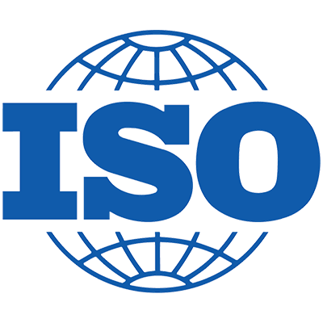
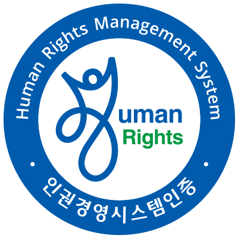

HOME > 지속 가능 경영 > 전략&체계
ESG Strategy
CULTURE GLOBAL ONLYONESustainability Strategy
ESG Management StrategiesCJ CGV는 모두를 위한 지속 가능한 즐거움 구현을 목적으로
지속가능한 컬쳐플렉스로 성장하겠습니다.
"Sustainable Entertainment for All"
모두를 위한 지속가능한 즐거움
-
Purpose
"Sustainable Entertainment for All"CJ CGV는 지속가능경영을 내재화를 기본 원칙으로 삼고 환경적으로는 지구 환경을 보호하는 사업장, 사회적으로는 공동체와 더불어 성장하는 기업, 고객에게는 누구나 즐거운 문화 공간이 되기를 지향하며 목표한 우선과제들을 충실히 이행하고자 합니다.
-
Goals
- PLANET
- 지구환경을 보호하는 사업장
- PEOPLE
- 공동체와 더불어 성장하는 기업
- CULTURE & SPACE
- 누구나 즐거운 문화 공간

Top priorities for 2025
-

- PLANET
- 환경경영시스템(ISO14001) 인증
-

- PEOPLE
- 인권영향 평가/실사 완료
-
- CULTURE & SPACE
- 소비자중심경영(CCM) 인증
Priorities by Area
-
PLANET
- 1. 폐기물 저감
- 전 사업장 폐기물 관리 체계 완성
- 고객 폐기물 분리배출 체계 구축
- 2. 지속 가능한 자원 사용
- 재생(가능) 제품 사용률 증대
- 지속가능 원자재 사용률 증대
- 3. 온실가스 감축
- 주요 장비 에너지 효율화를 통한 절감
- 전 사업장 에너지 효율화 관리체계
-
PEOPLE
- 1. 일하기 좋은 일터 구축
- 내외부 인권영향 평가, 단계별 개선
- 2. 지역과 파트너와의 상생
- 지역 경제와 문화예술 활성화
- 지역 일자리 창출
- 3. 사회공헌 지속
- 소외계층 문화향유권 확대
- 미래세대 성장 지원
-
CULTURE & SPACE
- 1. 콘텐츠 차별화
- 다양한 문화 콘텐츠 제공
- 2. 공간의 변화와 혁신
- 고객 라이프 스타일 반영한 공간 진화
- 안전하고 친환경적인 공간 확대
- 3. 유니버셜 디자인/서비스
- CGV 온라인서비스 웹 접근성 준수
- 신규 사이트 유니버설 디자인 적용
-
GOVERNANCE
- 1. 이사회 ESG 리더십 강화
- 이사회 산하 ESG위원회를 신설
- ESG경영협의체 및 실무협의체 운영
- 2. ESG 정보공개 활성화
- ESG경영에 대한 방향성 제시
- 주요 ESG 성과 및 정책 투명 공개
Basic Operating Principles
"지속가능경영 내재화"- 준법경영
- 윤리경영
- 리스크 관리
- 사업장 안전 및 보건
- 구성원 역량 강화
- 이해관계자 소통과 참여
- 개인정보 관리 및 정보 보안